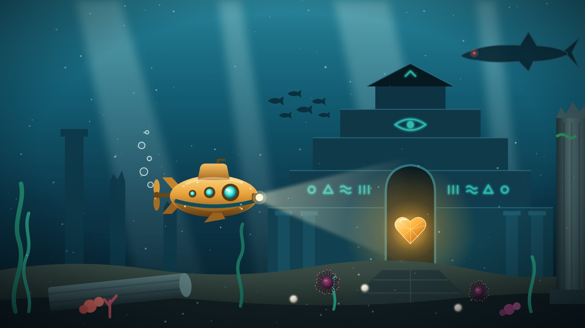
Required outline: explorer enters, faces challenges, finds a way through the maze, escapes.
| Story element | In the game |
|---|---|
| Forgotten temple | A temple sunk beneath the sea |
| The explorer | A brass mini-sub with a headlamp |
| Hidden keys & symbols | Moon, Sun & Star sigil stones |
| Locked doors | Portcullis gates, one per sigil |
| Traps & dangers | Urchins, currents, a guardian shark |
| Survival pressure | Oxygen drains; air vents refill it |
| Temple seals forever | 90 s collapse + a cracked wall opens a new route |
| W A S D / arrows | Swim |
| Shift | Boost (uses more oxygen) |
| Space | Sonar: an arrow points to the next goal |
| Esc | Pause · how to play · restart · menu |
| Enter | Start a dive |
Intro text is two lines; the rest is taught by the HUD objective bar, toasts and the sonar.
Oxygen drains every second, faster while boosting and during the escape. Hovering over a glowing vent refills 30 / s. At 25% the HUD pulses red and a warning ticks.
Each sigil stone opens its matching portcullis. Approaching a sealed gate without it shows which sigil is needed. Gates slide down with sound and light.
Urchins cost oxygen and points with knock-back. Currents push the sub. The guardian shark patrols its corridor and charges when you enter its lane.
Space sends a ring and an arrow toward the current objective for 3.5 s, costing 3% oxygen with a 4 s cooldown. It keeps the maze fair without a minimap.
Taking the Heart starts a 90 s timer. The Star Gate slams shut, a cracked wall crumbles into debris to reveal a shortcut, red alarm lighting pulses and the camera rumbles.
Easy / Normal / Hard (0.6x / 1x / 1.45x) scales oxygen drain and hazard damage. All numbers live in one GameSettings asset for live tuning.
| Pearl (23 in the level) | +10 |
| Sigil stone | +50 |
| Heart of Eternity | +200 |
| Each second left on escape | +5 |
| Each hit taken | −20 |
JSON in PlayerPrefs (SaveSystem.cs), with a two-click reset.
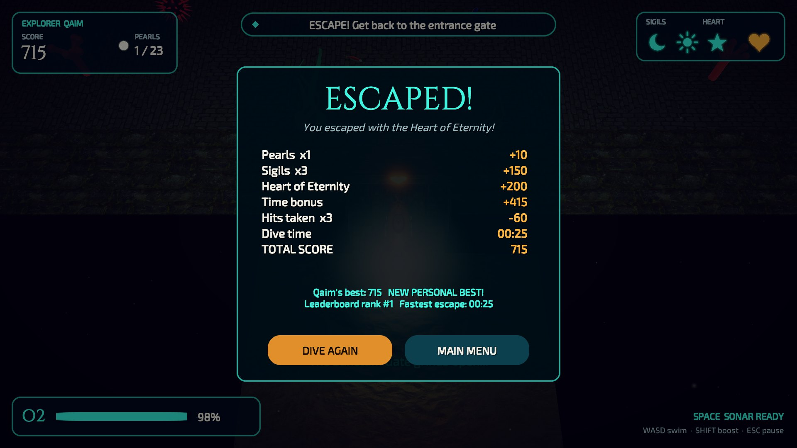
End screen: score breakdown, personal best, rank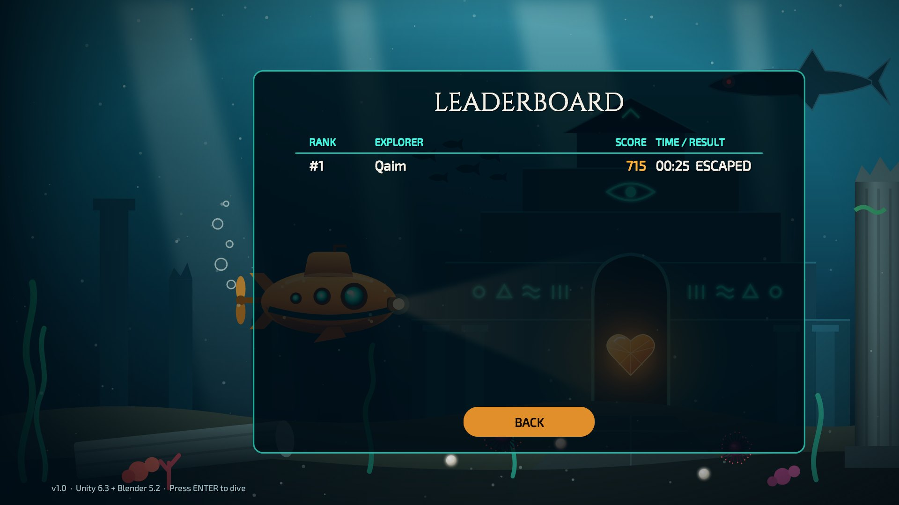
Leaderboard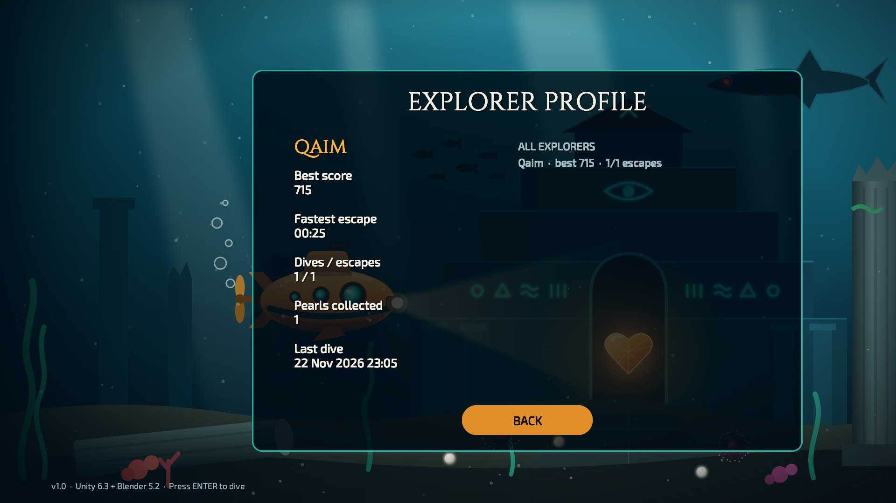
Explorer profileThe whole level is read from Assets/Level/level_map.txt: edit the text, rebuild, and the 3D maze regenerates.
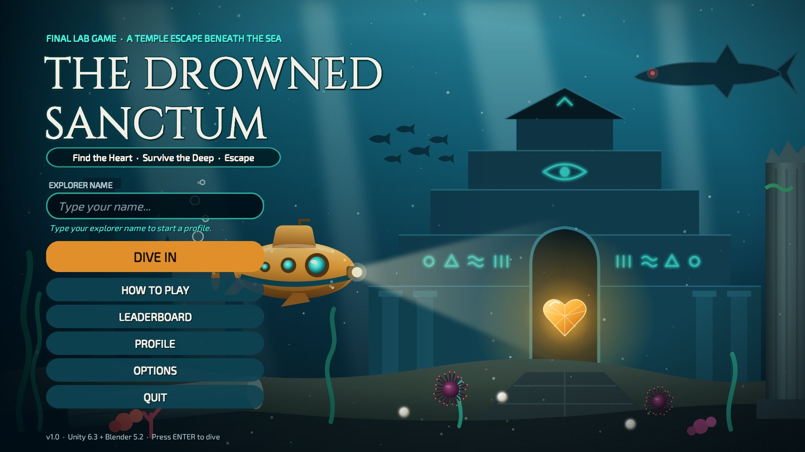
Main menu: explorer name = profile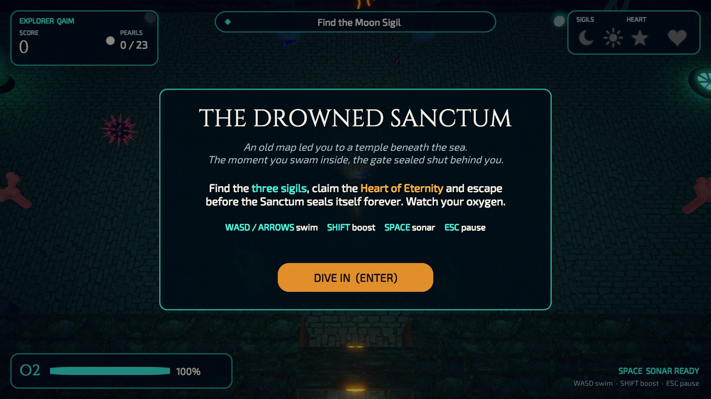
Two-line intro + controls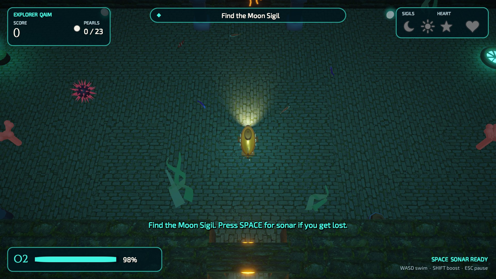
HUD: score, pearls, sigils, oxygen, objective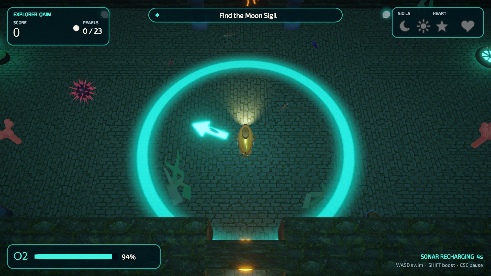
Sonar ping points to the Moon Sigil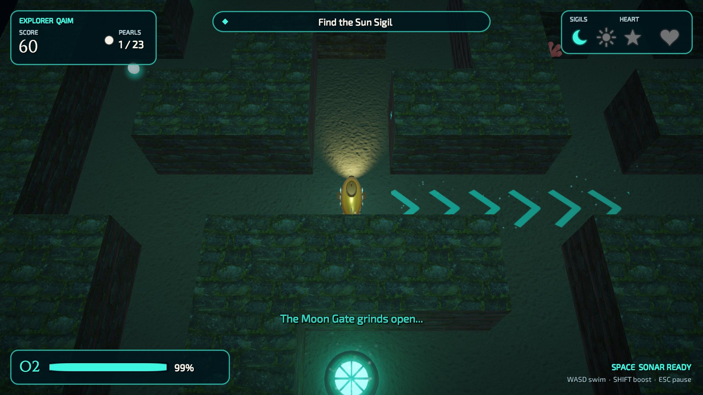
West wing: currents push the sub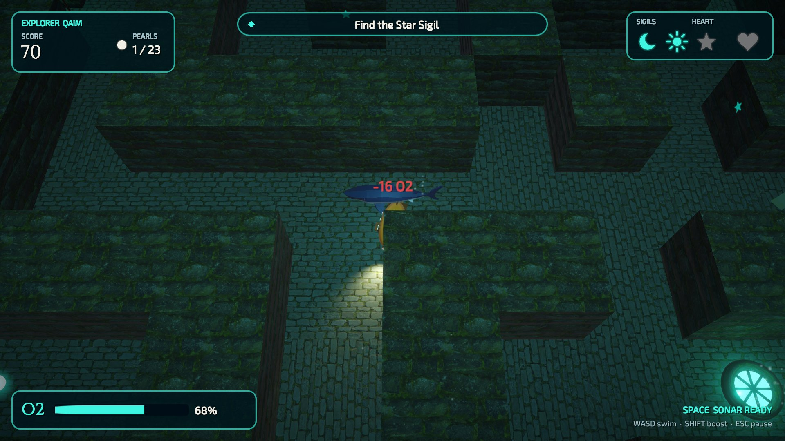
Guardian shark charges: −16 O2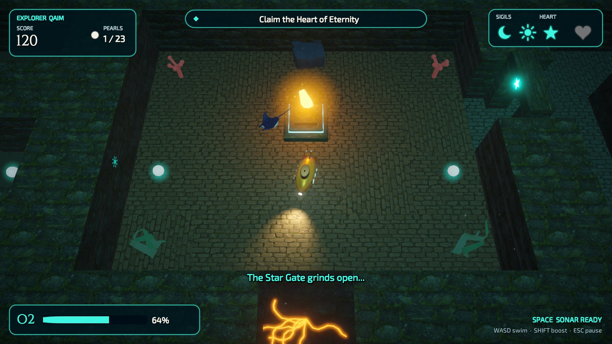
Heart chamber: the Heart of Eternity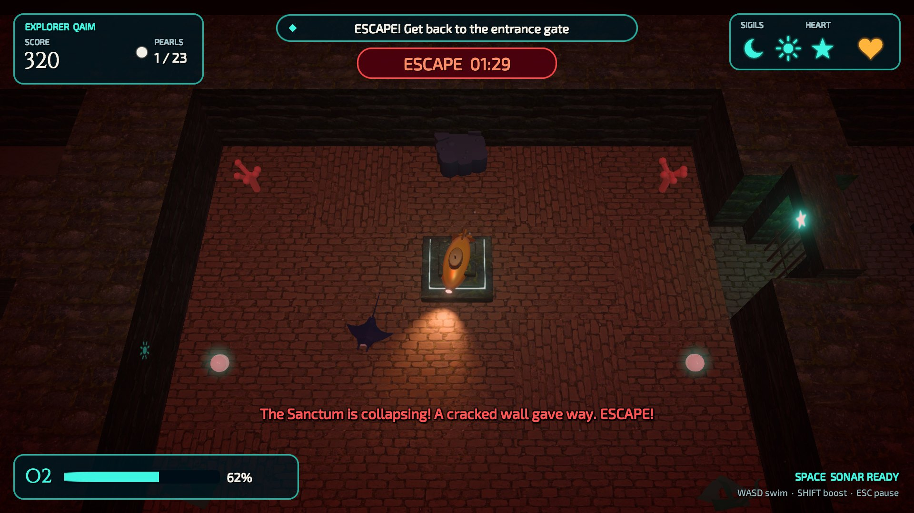
Escape: 90 s timer and red alarm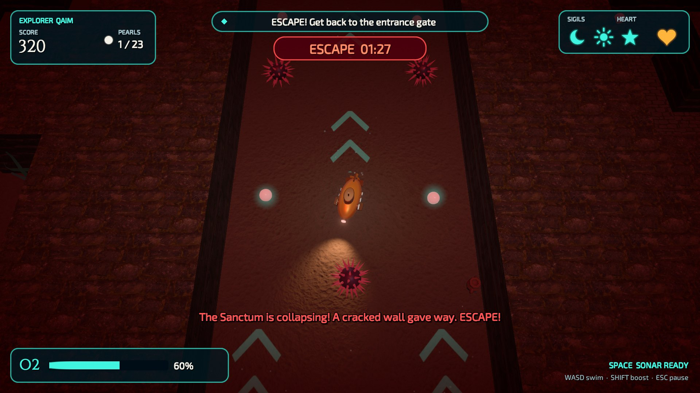
The collapsed wall opens the hidden shaft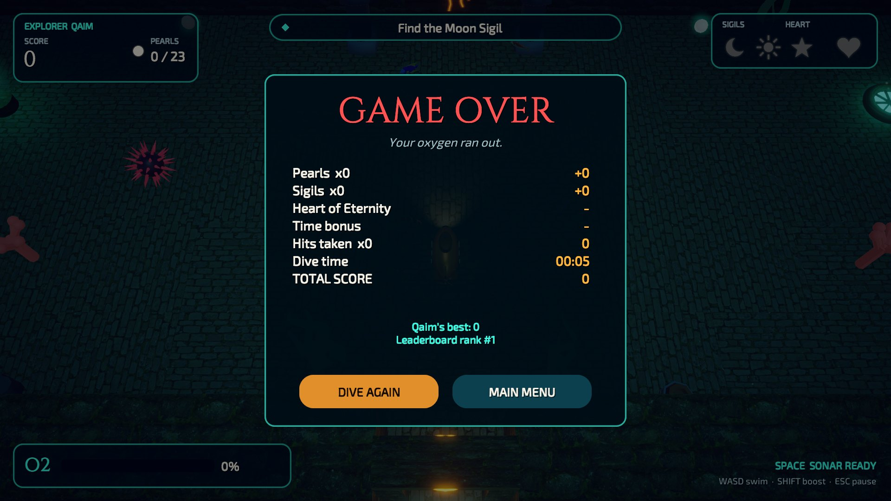
Game over: oxygen ran out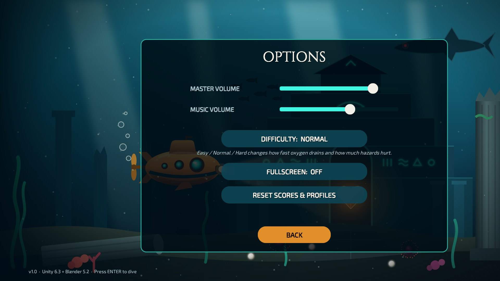
Options: volume, difficulty, fullscreen, reset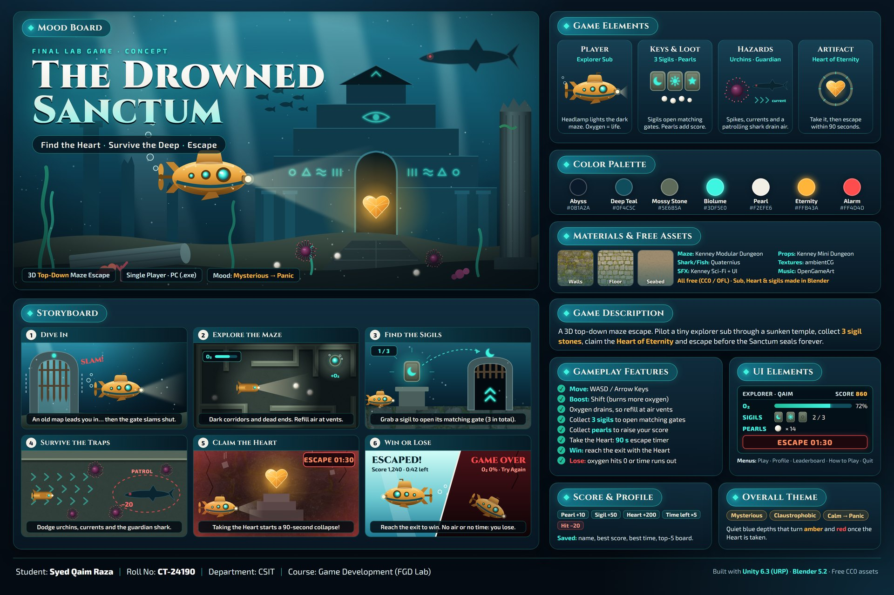
Submitted mood board & storyboard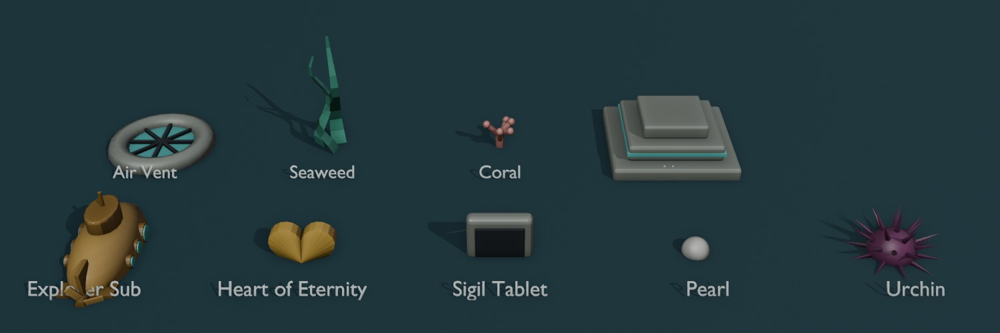
Custom props modelled in Blender (script-generated)Deep teal fog, mossy stone, bioluminescent cyan glyphs, amber Heart. Calm blue exploring, then amber/red panic once the Heart is taken. URP bloom, vignette, neutral tonemapping, fog and HDR emissive glows.
GameManager: state, oxygen, score, sigils, escape timer, win/lose
GameSettings: every tunable number
SaveSystem: profiles, leaderboard, options
SFX: music & sound
PlayerController: Rigidbody swimming, boost, knock-back, banking, sonar
CameraFollow: angled top-down follow, look-ahead, shake
Pickup · Gate · ExitZone · Hazard · CurrentZone · SharkPatrol · AirVent · CrackedWall · EscapeSequence · Floater · Sway · FishSchool
GameHUD: HUD, intro, pause, help, end screen, popups
MainMenu: name/profile, how to play, leaderboard, profile, options
UISound
ASCII maze + legend
9 props → FBX
models · textures · audio
URP, materials, prefabs, both scenes, UI
BuildPipeline · Win64
build.ps1 (repo root) watches Assets/ Packages/ ProjectSettings/ and rebuilds the exe automatically when code changes. Map or builder edits also regenerate the scenes. Rendering: URP Forward+, HDR, bloom, fog, no baked lighting, which suits integrated GPUs.
| Pearl collected, score +10 | ✓ |
| Moon / Sun / Star sigils collected | ✓ |
| Moon / Sun / Star gates open with their sigil | ✓ |
| Shark & urchin hits cost oxygen and points | ✓ |
| Air vent refill 40% → 91% | ✓ |
| Heart → escape timer, Star Gate slams | ✓ |
| Exit with Heart → WIN (score 715) | ✓ |
| Oxygen 0 → GAME OVER | ✓ |
| Profile + leaderboard saved and shown | ✓ |
Run with DrownedSanctum.exe -autotest: it teleports through every objective, logs the results and saves screenshots (used in this deck).
| Main menu | 59 fps |
| Gameplay | 57 fps |
| Build size | 106 MB |
| Rebuild time (code change) | ≈ 25–40 s |
Test machine: Intel i7-1255U · Intel UHD integrated graphics · 16 GB RAM
Merged wall/floor meshes, no shadows, no baked GI, fog to limit view distance, emissive glows instead of many lights, FXAA instead of MSAA.
| Request | Where |
|---|---|
| Change a score / speed / timer | Drowned Sanctum › Edit Game Settings |
| Change the maze | Assets/Level/level_map.txt |
| Change a mechanic | Assets/Scripts/World/*.cs |
| Win / lose / oxygen rules | GameManager.cs |
| Rebuild the exe | build.bat or Unity menu |
Example: set escapeTime 90 → 45 or pearlScore 10 → 25, press Play, and the change shows immediately.